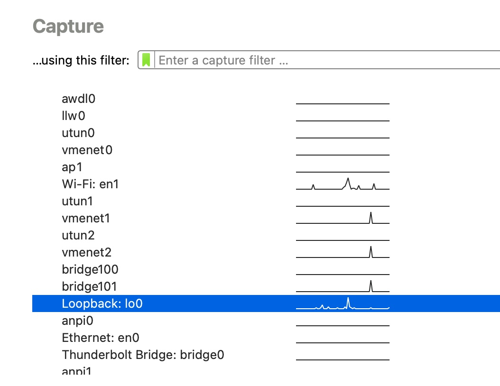
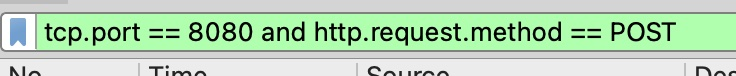

What You'll Learn
- Generation of error message containing sensitive information
- Missing encryption of sensitive data
- Run the java file:
java -jar vulnerable-webapp-1.2.0.jar
- The default (user-role) username is
tjones and the default password is newpassword.
- Navigate to
http://localhost:8080/ you should see a login page.
- Login with the default username and password
- Navigate to the
List Items page.
- Add a search query to the URL e.g. add
?q=three at the end of the URL in the address bar.
- The full URL would look like
http://localhost:8080/items?q=three
- Hit return, the page should refresh with only items that contain the search term you entered.
- Replace
three in the search with the character { e.g. ?q={. Hit return
- What do you see now?
- Is this useful to an attacker?
- Install and open Wireshark (https://www.wireshark.org/)
- Start capturing packets on the
loopback interface. 
- In the filter bar, filter on
tcp.port == 8080 and http.request.method == POST
- Navigate to
http://localhost:8080/ you should see a login page.
- Login with the default username and password
- Look in Wireshark, can you uncover the IP packet which holds the password the browser sent to the server?